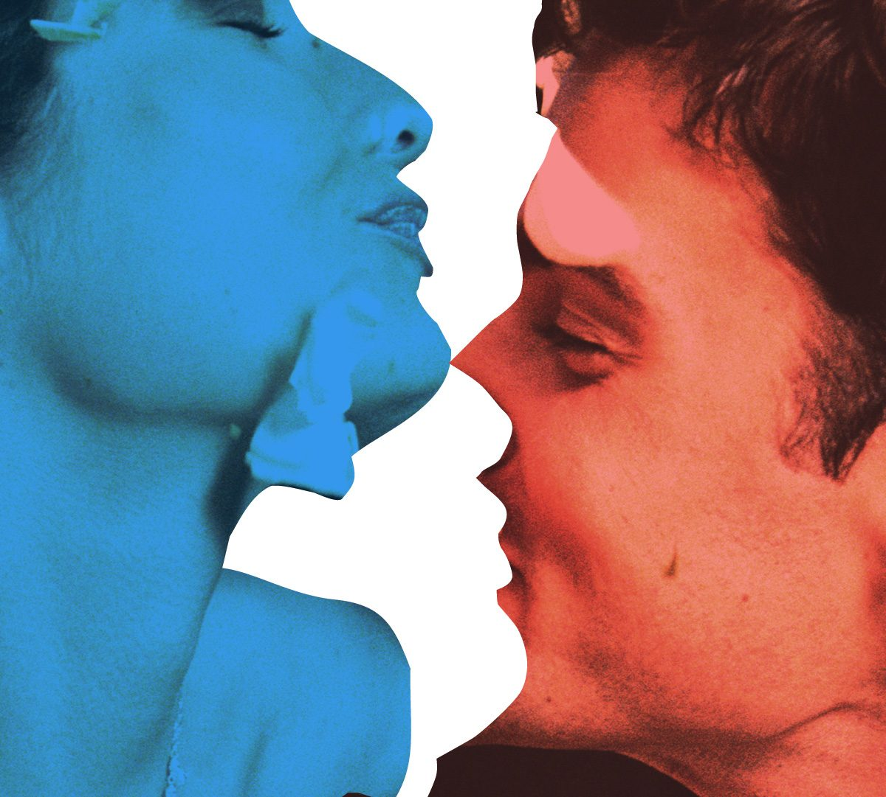
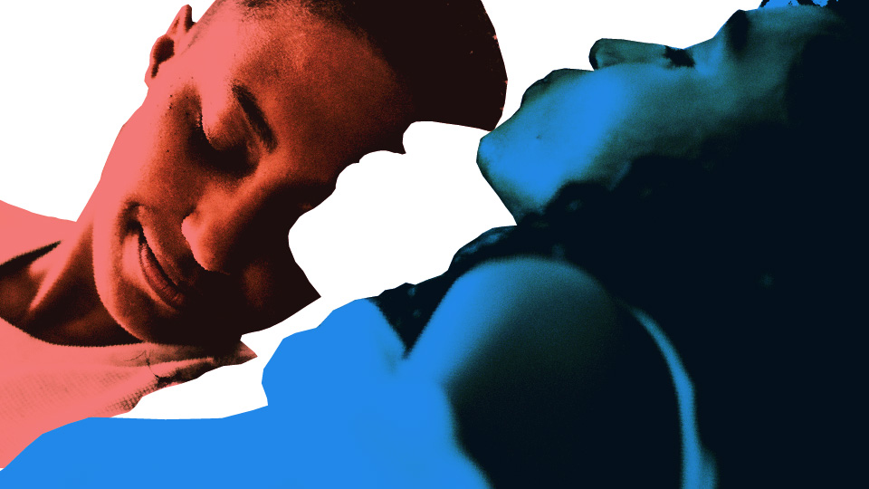
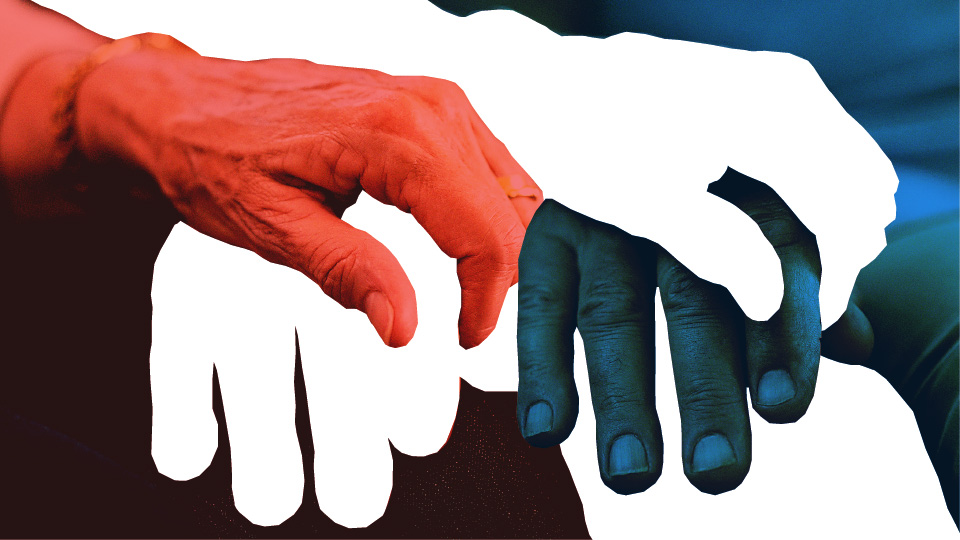
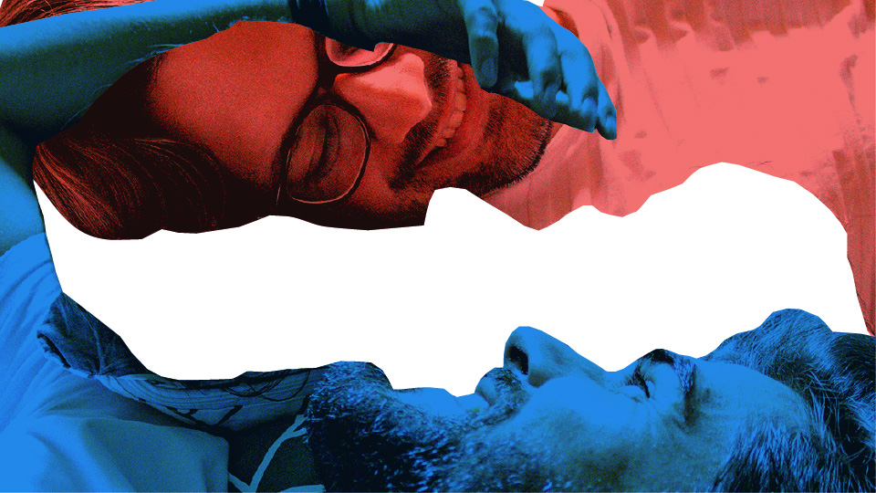
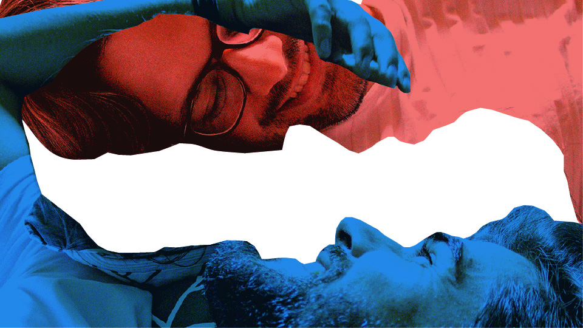
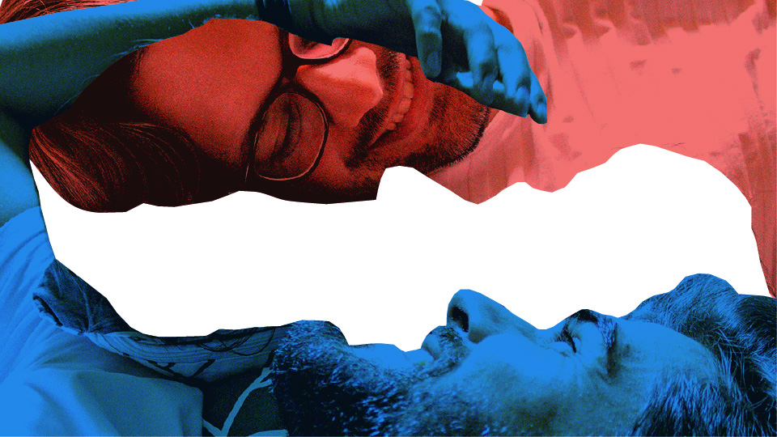
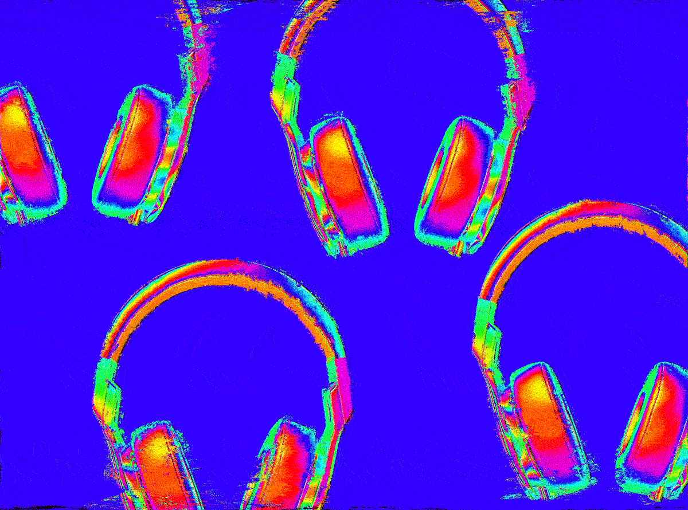

editorial illustrations for gama magazine
gama magazine — 2020-2021
Gama is the Nexo group's digital lifestyle magazine. Due to its differentiated and evergreen content, its productions demand a great demand for illustrations. These are some of the favorites I've produced in the last year.



 


Illustrations for the interview "Regina Navarro Lins: 'Sex in marriage is a tragedy'"


Animated illustration for the article "NFT and music: source of income and getting closer to fans?"